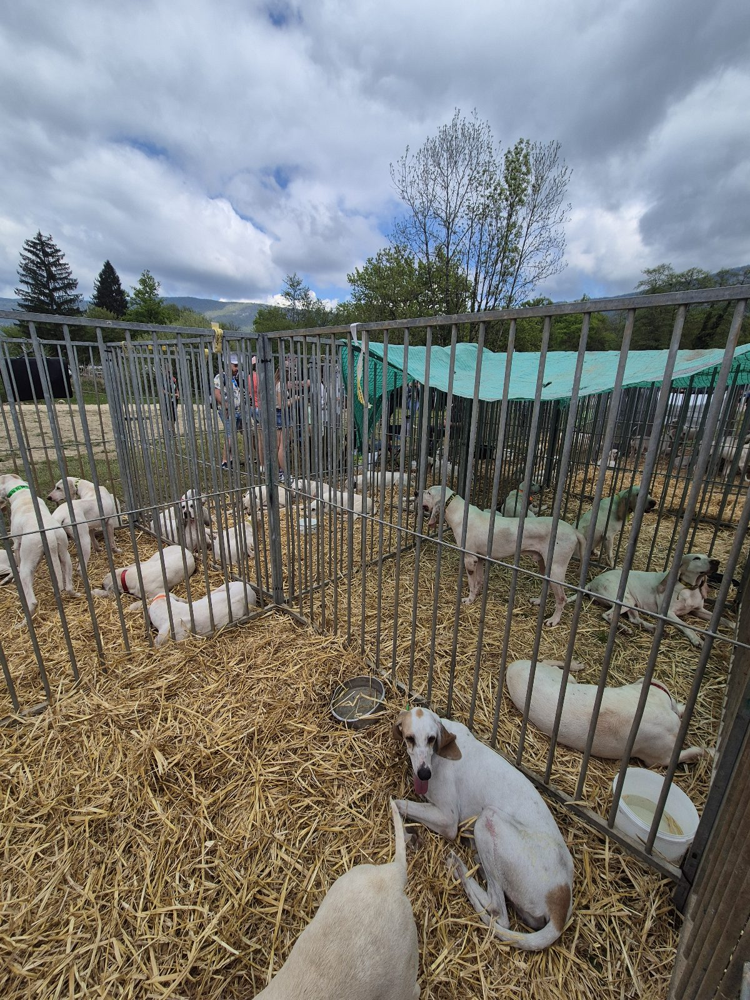

Actualités / Première expo, premier Excellent pour Virka !
Première expo, premier Excellent pour Virka !

Le 19 avril 2026, nous avons participé à la Régionale d'Élevage de Lépin-le-Lac, notre toute première exposition. Pour l'occasion, nous avons présenté Virka en classe ouverte femelle, et elle a obtenu la qualification Excellent !
Pour un premier pas dans le monde des expositions, on ne pouvait pas rêver mieux. Cette journée a aussi été l'occasion de belles rencontres avec les membres du club, des passionnés avec qui nous avons pu échanger et partager notre amour de la race.
Une première qui nous donne envie de continuer !